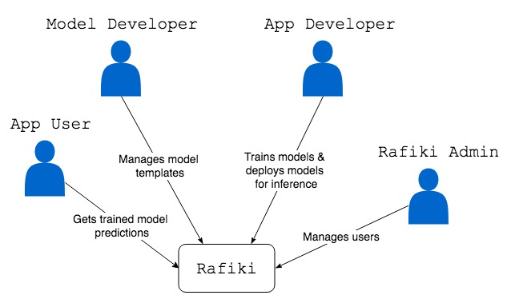
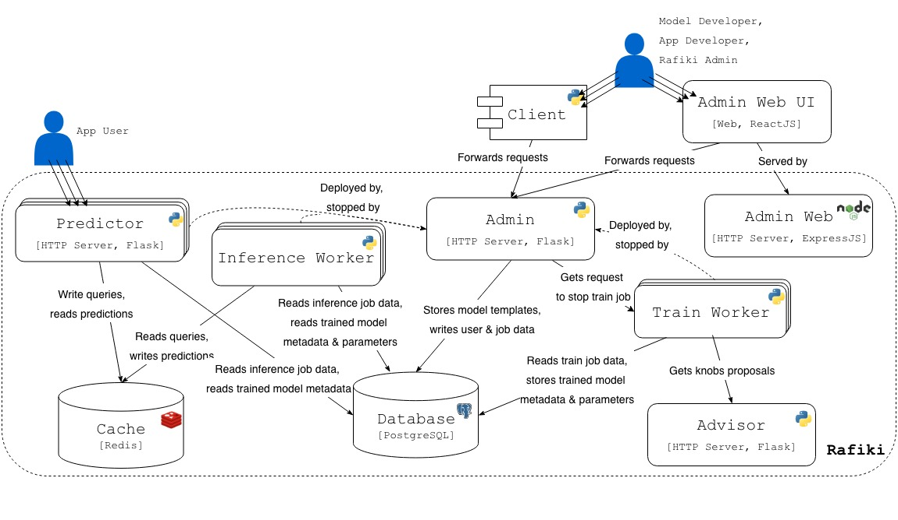

Rafiki’s Architecture¶
Table of Contents
User Roles¶

{kind=link}
System Context Diagram for Rafiki
There are 4 user roles:
- Rafiki Admin manages users
- Model Developer manages model templates
- App Developer manages train & inference jobs
- App User makes queries to deployed models
System Components¶

{kind=link}
Container Diagram for Rafiki
Static Components of Rafiki¶
These components make up Rafiki’s static stack.
- Admin is a HTTP server that handles requests from users, and accordingly updates Rafiki’s database or deploys components (e.g workers, query frontends) based on these requests
- Client is a client-side Python SDK for sending requests to Admin
- Advisor is a HTTP server that generates proposals of knobs during training
- Database is Rafiki’s main store for user, train job, inference job, model templates, and trained model data, including model parameters
- Cache is Rafiki’s temporary store for queries & predictions during inference
Dynamic Components of Rafiki¶
These components are dynamically deployed or stopped by Admin depending on the statuses of train or inference jobs.
- Each Train Worker is a Python program that trains models associated with a train job,
- Each Inference Worker is a Python program that makes batch predictions with trained models associated with an inference job
- Each Query Frontend is a HTTP server that receives queries from users and responds with predictions, associated with an inference job